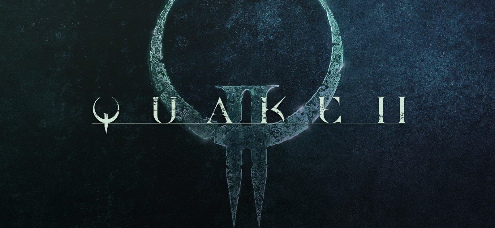
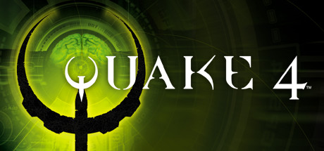

My Projects
prIDE - postmortem

prIDE is a completely free Online IDE designed with collaboration in mind. Developed over two semesters during our final two project based classes at NJIT, the goal of the project was to revolutionize the frankly sorry state of most freely available Online IDEs. There are other projects which are quite similar to ours, but our goal was to develop a sleek and attractive UI, have collaboration-based features, and have Git integration built in. All of the details are available on the GitHub page for prIDE. In this post, we’ll go through the learning process, what was successful, what was difficult, and much more.
prIDE - the completely free Online IDE which was designed with collaboration in mind. Developed over two semesters during our final two project based classes at NJIT, the goal of the project was to revolutionize the frankly sorry state of most freely available Online IDEs. There are other projects which are quite similar to ours, but our goal was to develop a sleek and attractive UI, have collaboration-based features, and have Git integration built in. In this postmortem, we’ll go through the learning process, what was successful, what was difficult, and much more. Was prIDE a success?
Before we get to the details, let’s recap. prIDE was born out of the lackluster state of most freely available Online IDEs, and was also heavily inspired by the entire Google Docs suite. One of the most impressive things about Google Docs is the fact that it took one of the biggest selling pieces of owning a PC in the mid to late 90s and made it completely free with no software installation required. Of course, with more than a decade of improvements to hardware and software since Microsoft’s first introduction of Office, this isn’t the most surprising thing in retrospect. But when we consider the enormous attachment rate of Office to not only Windows PCs but Macs as well, I believe the Google Docs suite stands in a unique juxtaposition. Computers were sold on word processing, PowerPoint presentations, and spreadsheets. It revolutionized home computing and gave it a reason. Microsoft has been selling the impressive Office applications ever since their introduction, and suddenly Google has a feature complete free version that’s usable from almost any device. However, Google is missing a major piece in their suite, and that’s a software comparable to Visual Studio, one of the most used and powerful software development suites. This is the problem that prIDE sought to solve.
Bringing Visual Studio to a web browser environment is likely a challenging prospect even after Google’s massive success with Docs, Slides, and Sheets. Visual Studio supports a plethora of languages, holds gigabytes worth of documentation and help data, and needs to support production level software development. I guess it’s not too big a surprise that Google hasn’t attempted a free Visual Studio clone just yet. But – they could, and I believe should, have something for programming in the Docs suite. This lack of any sort of programming support comes as a bit of a surprise when you consider how valuable it could be to hack away at a Python script really quick with a friend. In truth, on top of being free and quickly accessible via a browser, one of the biggest impacts of the Docs suite is the collaboration and real-time updating of text as it's written by multiple contributors. This was what prIDE sought to bring to the Online IDE space. Ultimately, prIDE is a fuse between the power of collaboration and the easy to use state of simply opening up a page in a browser.
Interestingly, some of the biggest challenges during development actually came from our work done during our first semester. There was a bit of a nerve wracking night right before our project’s beta was due, during which we needed to bring together all of the individual pieces we had worked on. I had created the interface using HTML, CSS, and JavaScript (no libraries or extra design tools were allowed – IE Bootstrap). This needed to be merged with the Node.js server which was mostly set up, but we didn’t have much of the logic done for compiling or running the code. We also had no Git implementation or real-time updates implementation at all during this phase. We certainly had a long night, but were able to bring together a decent setup that could compile and run java code from the browser. After this rough initial phase, the tides turned in our favor for the rest of the semester. At the end, we had a great accomplishment on our hands. Almost everything worked great and as intended.
I believe one of the biggest things we all learned from working on prIDE was how to work with a team. Some, but not all of us, have some work experience at internships. While those with internships may have learned a bit about what it’s like to work on a project together with a team, that certainly wasn’t true for everyone. If there’s one thing prIDE has given us outside of the vast improvements to our programming knowledge, it’s the knowhow of how to best interact and work as a team. If we were to do anything differently if we had another go-around, I think we could have much more consistent meetings. Since everyone in this group knew each other very well before working on the project (we are all very good friends) this meant that I, as the project manager, was less of a boss to my team members and more of a guider and friendly manager. Of course, I don’t think I would want be a ‘boss’ or even feel as though the project manager is meant to be one. I do however think that my role would have been a bit different if I was acting as the project manager for a team that wasn’t made up entirely of people that I know already.
To top off prIDE, we gave some surveys out to our fellow students at NJIT and our good friends at the Association for Computing Machinery. We think prIDE has been excellently received, and we think we were really successful as a team. Some of the feedback we received from our surveys were great too. Overall prIDE has been a fantastic experience.
Quake 2 Stealth Mod
Inspired by the stealth action of Dishonored, this Q2 stealth mod will have you blinking (teleporting) past enemies, laying grenade traps, and pushing and pulling your foes. Experience a new way to play Q2! In this Dishonored inspired mod, I've blended the stealth action of Dishonored with the fast, fluid movement of Quake 2.
Shortlist of changes and interesting tidbits:
What's going on with the lighting? Quake 2 was staticly lit using basic intensity values. Excellently, the developers determine how visible you are to enemies based on how lit you are. Muzzle flashes will brighten you, as will other scattered light sources throughout the levels. However, the main game lighting is on the fritz. For a few seconds, the light will be on, until it suddenly flickers off. After a few moments, it flickers back. Take advantage of the failing lights to slip past your enemies, and use the darkness to escape if you've been caught. Once the enemies lose Line of Sight, use the darkness to hide. The enemies have a much tougher time chasing the player through the level due to the reduced number of trace points an enemy can use to track you down.
Regular grenades do very little damage, but what's going on with the grenade launcher? The grenade launcher now places sticky grenades throughout the map with a timer of around 10 seconds. Lob a grenade to attract an enemy to its position, and time it with the sticky grenades explosion! Explosion sizes have been increased to make these interactions more forgiving.
The fabled BFG, once a weapon of mass destruction in the Quake world, has become a lowly.... teleporter device? Aim the BFG and click to teleport a short distance ahead. Use this to sneak past your enemies! Make sure you don't run low on Mana, though...
Mana system. There's no more bullets, the player's actions are fully dictated by the use of Mana. Mana recharges slowly, but you'll want to make efficient use of the various mana packs throughout the map to top off your mana and optimize your routes throughout the level.
Push and pull enemies using mana, sending them launching into the sky or pull them close and switch to the blaster for a one shot critical attack
Drain the life of your enemies to fuel your own, but don't waste too much Mana! Enjoy! PS. Some screenshots/gifs/video forthcoming
Quake 4 Askew Mod
Every polygon has been skewed, the walls have become floors, and somethings up with the gravity... this has to be one of the wackiest Q4 mods yet! In this mod, players can experience a wilder, weirder way to play Quake 4...
Interesting changes:
Every polygon in the game world is skewed by a certain factor, causing heads to stretch, animations to move in odd ways, and my personal favorite: the reticle is not where your weapon will fire! You'll need to keep an eye on your gun's muzzle to get an idea of where you're firing :)
Gravity is different! All of the game's gravity is tilted by 45 degrees on the x axis. Walls become floors and some floors become walls, not to mention objects in the scene moving in crazy ways!
Some fun weapon mods - there are a bunch, but an interesting one is the machine gun. Land a headshot and you'll one shot just about anything. Good luck aiming with everything skewed, though! Meanwhile, spraying won't get you very far
The more you fire, the sooner you'll lose. With everything going wacky in the Quake 4 world, completing each level is a challenge to click as little as possible. Make those shots count. The armor gauge ticks down to 0 whenever you're firing a weapon (pressing left click). Once it hits zero, you'll die! Have fun! PS. Some screenshots/gifs/video forthcoming